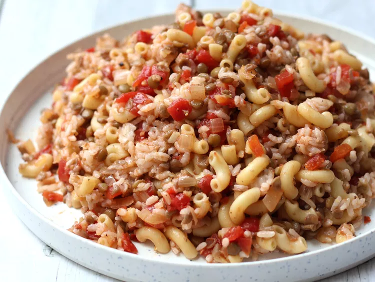

Description:
Koshari is a hearty Egyptian dish combining rice, lentils, pasta, and chickpeas, topped with a tangy tomato-vinegar sauce and crispy fried onions. It's a beloved vegan street food staple.
Ingrediants:
- Brown lentils
- Rice
- Small pasta (macaroni/vermicelli)
- Chickpeas
- Onions (for frying)
- Tomato sauce
- Vinegar
- Garlic
- Ground cumin
- Oil, salt, and pepper
Steps:
- Soak and cook lentils until tender.
- Cook rice and pasta separately.
- Fry thinly sliced onions until golden and crispy.
- Prepare tomato-vinegar sauce with garlic and spices.
- Layer rice, lentils, pasta, and chickpeas in a bowl.
- Top with tomato sauce and fried onions. Serve hot.